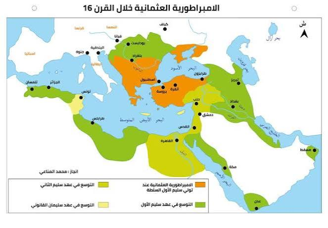
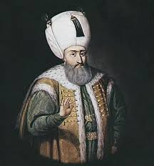
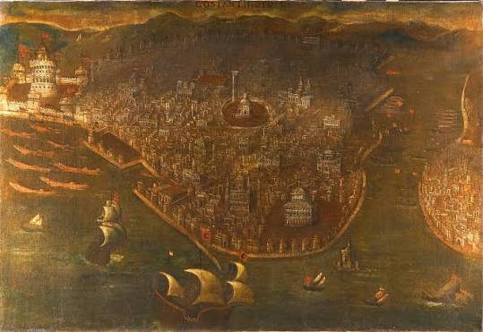
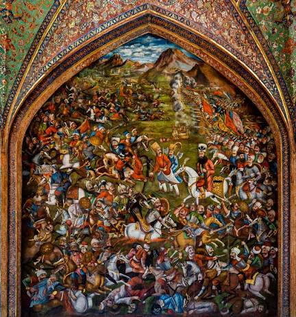
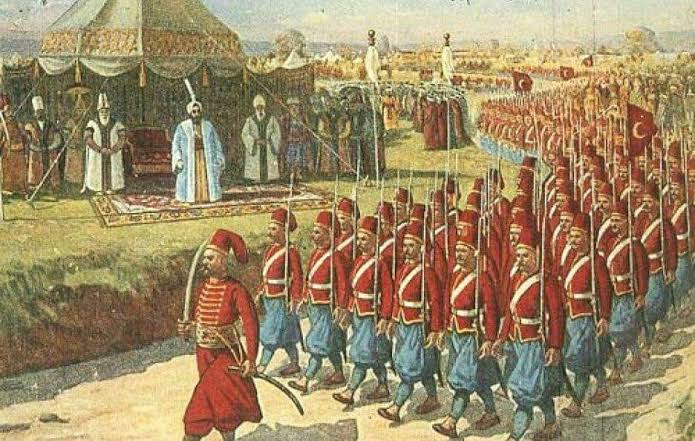
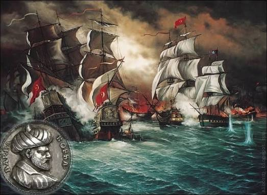
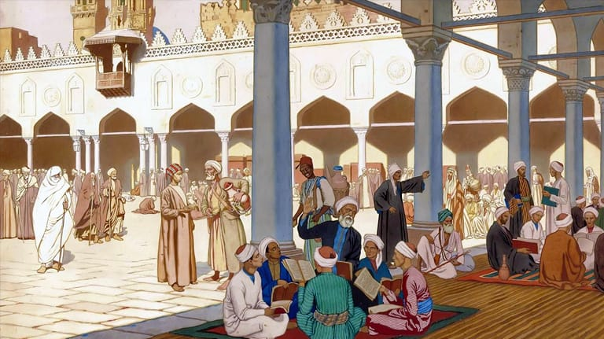

توسع الإمبراطورية العثمانية وتنظيمها في القرن السادس عشر
مقدمة
تنسب الإمبراطورية العثمانية إلى مؤسسها عثمان الأول الذي استفاد من تفكك دولة السلاجقة الروم بالأناضول (مرتفعات شرق تركيا اليوم) في أواخر القرن الثالث عشر الميلادي (XIII م)، ليحوّل إمارته التركية إلى دولة مُحاربة، تمكّنت من القضاء على الإمبراطورية البيزنطية، ومن الاستيلاء على عاصمتها القسطنطينية في 1453 م (إستنبول منذ ذلك الحين)، وجعلت منها عاصمة إمبراطورية امتد مجالها في القرنين الموالين إلى آسيا الصغرى (شرقا) والبلقان (جنوبا)، وشهدت الإمبراطورية العثمانية أوج توسّعها وذروة قوتها وقوّة تأثيرها السّياسي خلال القرن السادس عشر الميلادي (XVI م) في عهد عاشر سلاطينها سليمان الأول الملقّب بـ«القانوني» (1566-1520).
ما هي مظاهر التوسع العثماني في القرن السادس عشر؟ وكيف نظّم العثمانيون إمبراطوريتهم في عهد سليمان القانوني؟
I التوسعات العثمانية في القرن السادس عشر
واصل سلاطين القرن السادس عشر توسيع مجال الإمبراطورية العثمانية على حساب خصومهم في أوروبا والشرق الإسلامي، اعتمادا على قوّتهم العسكرية حينا، والطرق الديبلوماسية لتحجيم تشتيت قواتهم في أكثر من جبهة حينا آخر.
أ. التوسعات في الشرق العربي وفي غرب فارس
1. التوسّع على حساب الدولة الصفوية
شكّلت الدولة الصفوية في إيران، منذ قيامها، خطرا على الإمبراطورية العثمانية، بسبب توجّهها الشّيعي وسياستها التوسعية. كما أثارت ممتلكاتها على المحيط الهندي أطماع العثمانيين، فضلا عن نشاط السلطان سليم الأول (1512-1520 م) حربا على مُلكها شاه إسماعيل، وهزمه في معركة جالدران (1514 م) دون أن يُزيل الخطر الصفوي نهائيا. ثمّ أخضع جنوب شرق الأناضول.
واصل سليمان القانوني مقاومة الصفويين، فنظم حملتين ضدّهم في 1533 و 1534 سيطر العثمانيون على العراق وغربي فارس. فتمكّن العثمانيون بذلك من النّفاذ إلى مياه الخليج، بعد ضمّ البصرة في 1547 م.
2. التوسّع في الشام ومصر
تمكّنت الجيوش العثمانية من السيطرة على الشام في 1516 م بعد انتصاراتها على جيش المماليك في «مرج دابق»، ليفتح أمامها طريق والي الشام. وانفردت دولة المماليك بمركز انهيار (حرب الجزر الشامية والبرية: حلب، حمص، دمشق، بيروت...). فاحتلّ سليم الأول معظم بلاد الشام والجزيرة العربية. كما جاءت حملته على مصر لاسقاط دولة المماليك في مثل هذا التاريخ ليفتح «حامد الحرمين الشريفين» الذي حملها المماليك من قبل.
3. التوسّع في جنوب شرق الجزيرة العربية
عمل السلطان سليمان على مدى استقراره على عرش الدولة العثمانية على توطيد سلطة العثمانية على شبه الجزيرة العربية (الحجاز، عمان، الأحساء...)، وتشكيل الحضور العثماني على البحر الأحمر. عين والي مصر بمركزه على عدن (جنوب اليمن)، وتركيز الحضور العثماني بجنوب اليمن. ثمّ استولى قائد الأسطول «بيري رئيس» على مسقط (عمان) في 1551 م.
ب. التوسّع في أوروبا وفي المتوسط وبلاد المغرب
استهدف توسّع الإمبراطورية العثمانية المسيحية في أوروبا. فاستغلّت الدولة العثمانية انشغال شارلكان (شارل الخامس) ملك إسبانيا وامبراطورها (1519-1556) في حروبه ضدّ فرنسا. كما استغلّت انشغال بابا روما. كما استفاد العثمانيون من الصراع بين الإسبان والبرتغال على المستعمرات، واستغلّوا التنافس بين الدول الأوروبية.
1. التوسّع في أوروبا
وقد كان فتح القسطنطينية 1453 م منطلقا لسلسلة الفتوحات العثمانية في أوروبا. فقد تقدّم العثمانيون نحو بلاد المجر (هنغاريا) فاحتلوا بلاد المجر (هنغاريا) وجعلوها ولاية عثمانية. كما فتحوا بلاد المجر (هنغاريا) وبلاد البوسنة والهرسك (البوسنة والهرسك) وبلاد الصرب (صربيا) وبلاد الأفلاق (رومانيا) وبلاد البغدان (مولدافيا). كما وصلوا في فتوحاتهم إلى أسوار فيينا (عاصمة النمسا) فحاصروها في 1529 م.
2. التوسّع في المتوسط وبلاد المغرب
تكتسب بلاد المغرب أهمية حيوية في نظر العثمانيين، إلاّ بعد احتلالهم مصر سنة 1517 م. وتعزّزت مكانتها الاستراتيجية لدى سلاطين العثمانيين في فتح الطرق التجارية العالمية في البحر المتوسط. انطلق العثمانيون في فتح بلاد المغرب العربي، فعملوا على طرد الإسبان من سواحل شمال إفريقيا. فتمكّن العثمانيون بقيادة «خير الدين بربروس» من إخضاع تونس ثم الجزائر. ثمّ استطاعوا بأسطولهم البحري بقيادة «خير الدين بربروس» من إخضاع تونس ثم الجزائر. كما اتجه العثمانيون إلى البحر الأبيض المتوسط...
II تنظيم الإمبراطورية في عهد سليمان الأول
أ. التنظيم الإداري
قام التنظيم الإداري للدولة العثمانية على أسس مركزية محكمة، حيث يجمع السلطان بين السلطتين الدينية والزمنية، ويُعاونه في إدارة شؤون الدولة:
- الصدر الأعظم (Grand Vizier): رئيس الوزراء، يمثل السلطان في إدارة شؤون الدولة ويشرف على باقي الوزراء.
- الديوان (Divan): المجلس الاستشاري الأعلى الذي يضم كبار رجال الدولة لمناقشة القضايا الكبرى.
- الولاة (Walis): يحكمون الولايات (الإيالات) التي قُسّمت إليها الإمبراطورية، ويرجعون مباشرة إلى السلطان.
- القضاة (Qadis): يشرفون على العدالة وتطبيق الشريعة الإسلامية والقانون العثماني (القانون نامه).
ب. التنظيم العسكري
اعتمدت الإمبراطورية العثمانية على جيش قوي ومنظّم كان من أقوى الجيوش في العالم آنذاك، وتكوّن من:
- الجيش الانكشاري (Janissaries): المشاة النظاميون، وهم نخبة الجيش العثماني، يتم تجنيدهم من الأطفال المسيحيين الذين يُحوّلون إلى الإسلام ويُدرّبون تدريبًا عسكريًا صارمًا.
- السباهية (Sipahis): الفرسان الذين يحصلون على إقطاعات أرضية مقابل خدماتهم العسكرية.
- الأسطول البحري: قوة بحرية هائلة ساهمت في توسع الإمبراطورية في البحر المتوسط والبحر الأحمر والمحيط الهندي.
- الأسطول البحري بقيادة خير الدين بربروس: الذي تمكّن من إخضاع تونس والجزائر وطرد الإسبان من سواحل شمال إفريقيا.
خاتمة
شكّلت الإمبراطورية العثمانية في القرن السادس عشر قوة عالمية كبرى بفضل توسعاتها الواسعة في أوروبا وآسيا وإفريقيا، وتنظيمها الإداري والعسكري المحكم، مما جعلها محطّ أنظار القوى الأوروبية ومنافسًا خطيرًا لها في البحر المتوسط والطرق التجارية العالمية.
📖 تعريفات
👤 شخصيات
- سليمان الأول (القانوني) (Suleiman I): عاشر سلاطين الإمبراطورية العثمانية (1520-1566)، لُقّب بـ«القانوني» لوضعه قانونًا نامه (القانون العثماني). شهدت الإمبراطورية في عهده أوج توسعها وذروة قوتها. نظّم حملات ضد الصفويين والسيطرة على العراق وغربي فارس، ووصلت فتوحاته إلى أسوار فيينا (1529).
- سليم الأول (Selim I): السلطان العثماني (1512-1520)، هزم شاه إسماعيل الصفوي في معركة جالدران (1514)، وتمكّن من السيطرة على الشام (1516) ومصر (1517) بعد القضاء على دولة المماليك.
- عثمان الأول (Osman I): مؤسس الإمبراطورية العثمانية، استفاد من تفكك دولة السلاجقة الروم بالأناضول في أواخر القرن الثالث عشر الميلادي، وحوّل إمارته التركية إلى دولة محاربة.
- شاه إسماعيل (Shah Ismail): ملك الدولة الصفوية في إيران، هزمه السلطان سليم الأول في معركة جالدران (1514) لكن الخطر الصفوي لم يُزل نهائيا.
- خير الدين بربروس (Khayr ad-Din Barbarossa): قائد الأسطول البحري العثماني، قاد حملات بحرية ناجحة تمكّن بها من إخضاع تونس والجزائر وطرد الإسبان من سواحل شمال إفريقيا.
- بيري رئيس (Piri Reis): قائد الأسطول العثماني، استولى على مسقط (عمان) في 1551 م، وعمل على توطيد الحضور العثماني في جنوب الجزيرة العربية.
- شارلكان (شارل الخامس) (Charles V): ملك إسبانيا وإمبراطور الإمبراطورية الرومانية المقدسة (1519-1556)، انشغل بحروبه ضد فرنسا، مما استغلته الدولة العثمانية في توسعاتها.
- أندري كلو (André Clot): مؤرخ فرنسي، صاحب كتاب «سليمان القانوني» (بيروت: دار الجيل، 1991)، ومنه اقتبس النص الوارد في مدخل الدرس.
🌍 دول ومناطق
- الأناضول: مرتفعات شرق تركيا اليوم، موطن نشأة الإمارة العثمانية بعد تفكك دولة السلاجقة الروم.
- القسطنطينية (إستنبول): عاصمة الإمبراطورية البيزنطية، فتحها العثمانيون سنة 1453 م وجعلوها عاصمة إمبراطوريتهم.
- البلقان: منطقة في جنوب شرق أوروبا، امتد إليها التوسع العثماني في القرنين XV و XVI.
- إيران (بلاد فارس): موطن الدولة الصفوية، التي شكّلت خطرا على الإمبراطورية العثمانية بسبب توجّهها الشيعي وسياستها التوسعية.
- العراق: سيطر عليه العثمانيون في حملاتهم ضد الصفويين (1533-1534)، وضمّوا البصرة في 1547 م للنفاذ إلى مياه الخليج.
- الشام: سيطرت عليها الجيوش العثمانية في 1516 م بعد انتصاراتها على المماليك في «مرج دابق».
- مصر: أسقطها سليم الأول سنة 1517 م بعد القضاء على دولة المماليك، وحمل لقب «حامد الحرمين الشريفين».
- الحجاز: منطقة في غرب الجزيرة العربية، عمل العثمانيون على توطيد سلطتهم عليها وتشكيل حضورهم على البحر الأحمر.
- عدن: مدينة في جنوب اليمن، عيّن فيها والي مصر مركزا للحضور العثماني في جنوب الجزيرة العربية.
- مسقط: عاصمة عمان، استولى عليها قائد الأسطول «بيري رئيس» في 1551 م.
- بلاد المجر (هنغاريا): احتلّها العثمانيون وجعلوها ولاية عثمانية في القرن XVI.
- البوسنة والهرسك: من المناطق التي فتحها العثمانيون في أوروبا.
- صربيا: من المناطق التي فتحها العثمانيون في أوروبا.
- الأفلاق (رومانيا): من المناطق التي فتحها العثمانيون في أوروبا.
- البغدان (مولدافيا): من المناطق التي فتحها العثمانيون في أوروبا.
- فيينا: عاصمة النمسا، وصلت إليها الفتوحات العثمانية فحاصرها العثمانيون في 1529 م.
- تونس: أخضعها العثمانيون بقيادة خير الدين بربروس في إطار توسعهم في بلاد المغرب.
- الجزائر: أخضعها العثمانيون بقيادة خير الدين بربروس في إطار توسعهم في بلاد المغرب.
- المغرب الأقصى: من مناطق بلاد المغرب التي استهدفتها التوسعات العثمانية.
- البصرة: ضمّها العثمانيون في 1547 م، مما أتاح لهم النفاذ إلى مياه الخليج.
- حلب: من المدن الشامية التي سقطت في أيدي العثمانيين بعد معركة مرج دابق.
- دمشق: من المدن الشامية التي سقطت في أيدي العثمانيين بعد معركة مرج دابق.
⚔️ أحداث هامة
- فتح القسطنطينية (1453): فتحها العثمانيون بقيادة السلطان محمد الفاتح، وجعلوها عاصمة إمبراطوريتهم، وكان منطلقا لسلسلة الفتوحات العثمانية في أوروبا.
- معركة جالدران (1514): معركة بين السلطان سليم الأول وشاه إسماعيل الصفوي، هزم فيها العثمانيون الصفويين دون أن يُزيلوا الخطر الصفوي نهائيا.
- معركة مرج دابق (1516): معركة بين العثمانيين والمماليك، انتصر فيها العثمانيون وتمكّنوا من السيطرة على الشام.
- حصار فيينا (1529): وصلت الفتوحات العثمانية إلى أسوار فيينا (عاصمة النمسا) فحاصرها العثمانيون في 1529 م.
- الاستيلاء على مسقط (1551): استولى قائد الأسطول «بيري رئيس» على مسقط (عمان) في 1551 م، مما عزز الحضور العثماني في جنوب الجزيرة العربية.
- ضم البصرة (1547): ضمّ العثمانيون البصرة في 1547 م، مما أتاح لهم النفاذ إلى مياه الخليج.
- معركة جالدران (1514): هزم فيها السلطان سليم الأول شاه إسماعيل الصفوي.
📜 تنظيمات ومؤسسات
- الديوان (Divan): المجلس الاستشاري الأعلى في الدولة العثمانية، يضم كبار رجال الدولة لمناقشة القضايا الكبرى.
- الصدر الأعظم (Grand Vizier): رئيس الوزراء، يمثل السلطان في إدارة شؤون الدولة ويشرف على باقي الوزراء.
- الوالي (Wali): يحكم الولاية (الإيالة) التي قُسّمت إليها الإمبراطورية، ويرجع مباشرة إلى السلطان.
- القاضي (Qadi): يشرف على العدالة وتطبيق الشريعة الإسلامية والقانون العثماني (القانون نامه).
📅 سنوات وفترات
- 1299: بداية الإمارة العثمانية على يد عثمان الأول.
- 1453: فتح القسطنطينية على يد العثمانيين.
- 1512-1520: عهد السلطان سليم الأول.
- 1514: معركة جالدران بين العثمانيين والصفويين.
- 1516: السيطرة العثمانية على الشام بعد معركة مرج دابق.
- 1517: إسقاط دولة المماليك والسيطرة على مصر.
- 1520-1566: عهد سليمان القانوني، أوج توسع الإمبراطورية العثمانية.
- 1529: حصار فيينا على يد العثمانيين.
- 1533-1534: حملات سليمان القانوني ضد الصفويين والسيطرة على العراق وغربي فارس.
- 1547: ضم البصرة من قبل العثمانيين.
- 1551: استيلاء بيري رئيس على مسقط (عمان).
- 1574: إلحاق تونس بالدولة العثمانية نهائيا.
📌 أخرى
- الانكشارية (Janissaries): المشاة النظاميون في الجيش العثماني، نخبة الجيش، يتم تجنيدهم من الأطفال المسيحيين الذين يُحوّلون إلى الإسلام ويُدرّبون تدريبًا عسكريًا صارمًا.
- السباهية (Sipahis): الفرسان في الجيش العثماني، يحصلون على إقطاعات أرضية مقابل خدماتهم العسكرية.
- الأسطول البحري العثماني: قوة بحرية هائلة ساهمت في توسع الإمبراطورية في البحر المتوسط والبحر الأحمر والمحيط الهندي، وقادها خير الدين بربروس.
- القانون نامه (Kanunnameh): القانون العثماني الذي وضعه سليمان القانوني، والذي جمع بين الشريعة الإسلامية والقوانين السلطانية.
- المراسيم السلطانية: أوامر يصدرها السلطان العثماني، ومنها المرسوم الوارد في مدخل الدرس الذي يدعو إلى منع المظالم وتوفير الطمأنينة للرعية.
🗺️ خرائط ومعطيات مصورة






